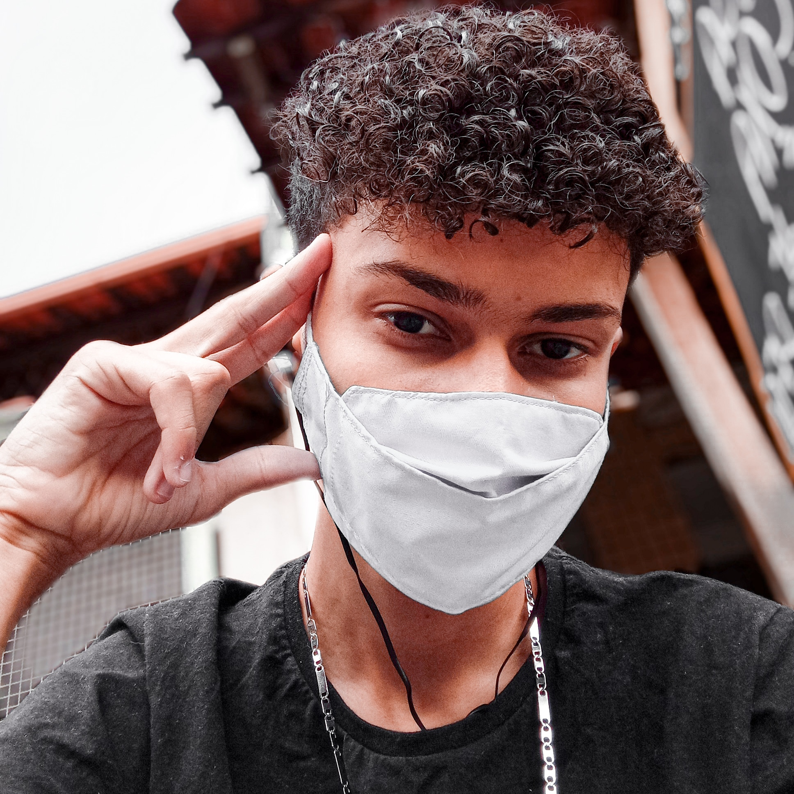

Arthur Catelani
Desenvolvedor Front-End - Designer Gráfico
Desenvolvedor Front-End - Designer Gráfico
Olá, me chamo Arthur Catelani sou Desenvolvedor Web Front-End e Designer Gráfico, Tenho atualmente 5 anos de experiência como Designer e 2 anos de estudo em Desenvolvimento Web. Gosto de sempre me reinventar e desenvolver projetos que me desafiem e que me tragam aprendizado.